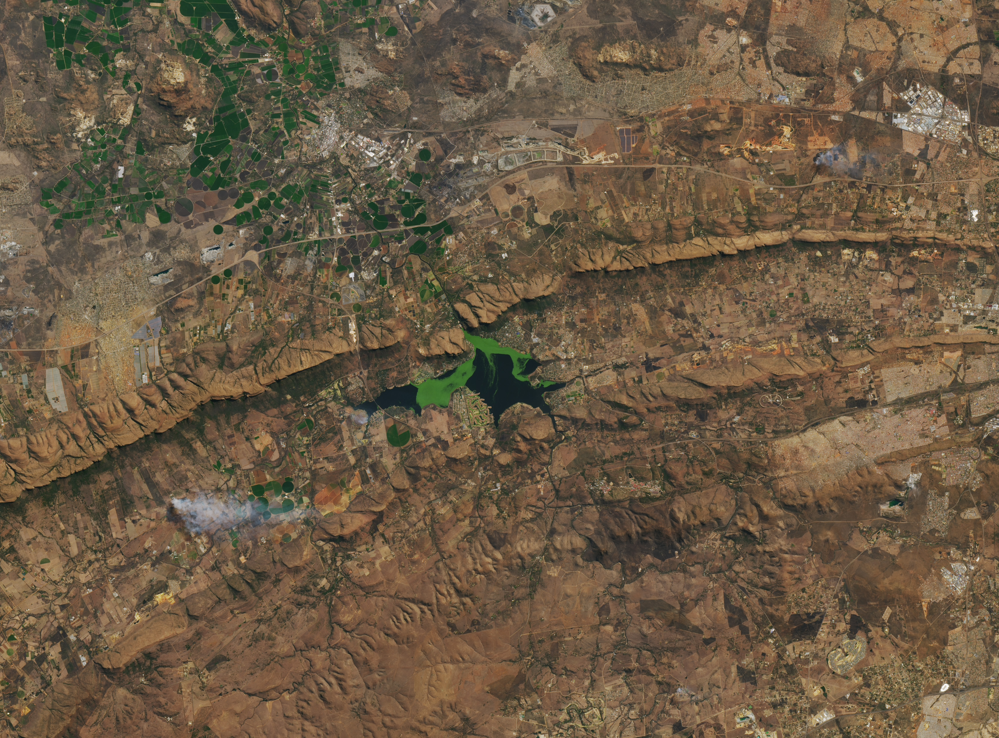

Earth Observation Health Analytics Platform
A first-of-its-kind platform using real-time Earth observation and health data to deliver actionable insights on Malaria and NCDs across Africa.
A first-of-its-kind platform using real-time Earth observation and health data to deliver actionable insights on Malaria and NCDs across Africa.
A first-of-its-kind platform that uses real-time interactive data of current human data surveillance and EO data combined to provide real-time precise health informatics on NCD and Malaria.



The main aim of the project is to use EO data to inform public health on two important health threats in Africa, Malaria and Non-communicable diseases. A data intensive real time data mining platform at commercial level to that acts as a machine surveillance.
Malaria and dengue surveillance combines raw disease data with habitat type, agricultural area, soil moisture, and surface water and air temperature. Particulate matter (PM10, PM2.5–10, PM2.5), NO₂, silica distribution, urban growth, and geospatial demographics are integrated to model vector suitability, water-borne pathogen transmission, and outbreak risk in real time.
Predict NCDsNon-communicable disease analytics integrate geospatial demographics, urban growth, habitat type, and agricultural land use with environmental stressors including NO₂, particulate matter (PM10, PM2.5–10, PM2.5), surface air temperature, and soil moisture to model NCD trajectories and support data-driven public health interventions.
Predict Malaria
Africa bears the highest burden of malaria and a rapidly rising impact of non-communicable diseases, driven by environmental change, urbanisation, and limited surveillance capacity. This platform is purpose-built for the African context, leveraging Earth observation data, geospatial demographics, and environmental variables to enable real-time disease surveillance, outbreak detection, and risk modelling. By integrating optical and radar EO data with advanced analytics, it supports evidence-based public health planning, timely interventions, and policy formulation across South Africa and the broader African region.